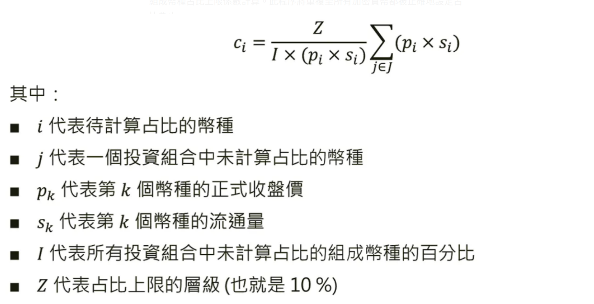
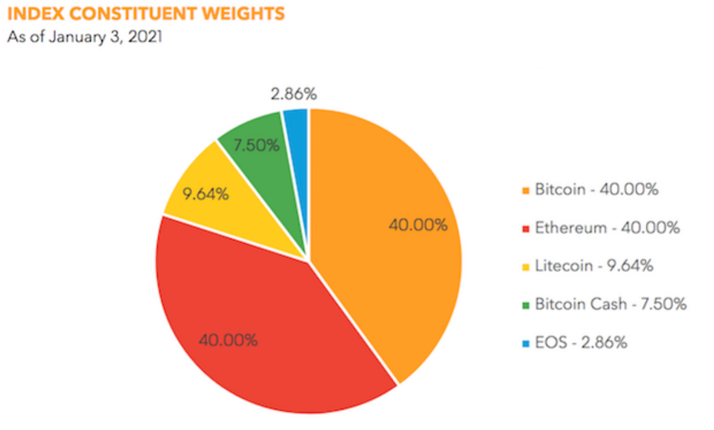
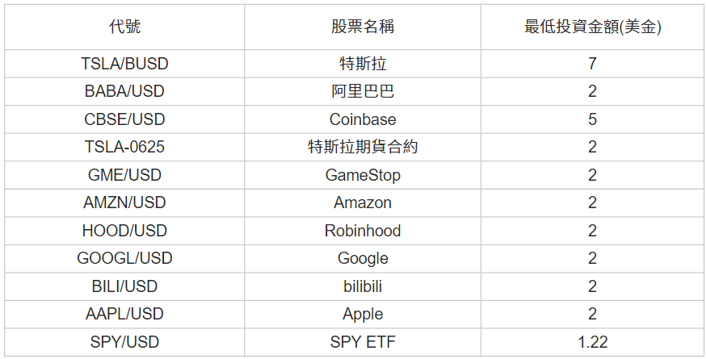
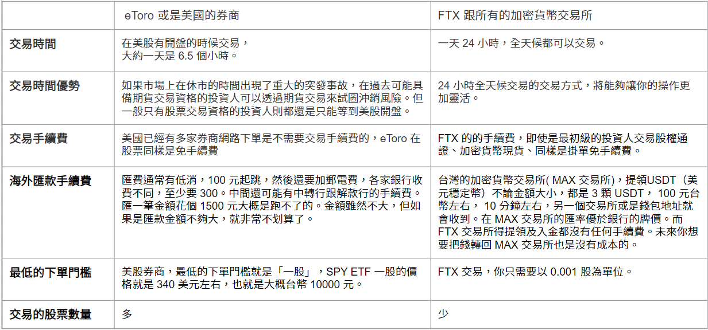
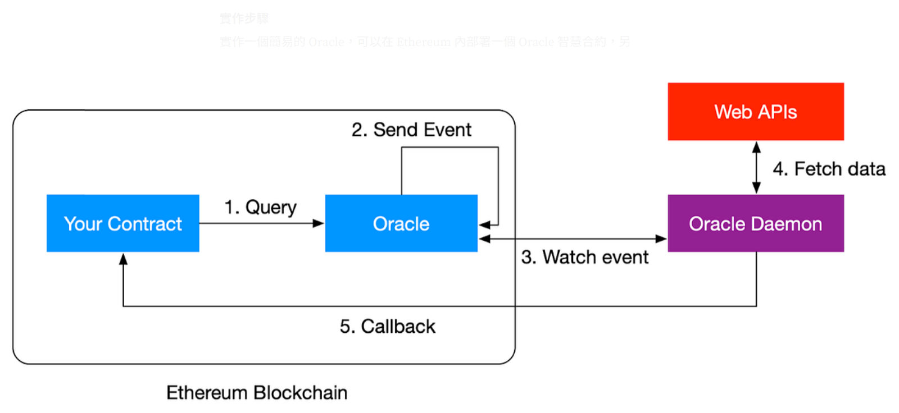

前言
數位資產本身具有被整合到廣義經濟下的潛力，藉由可被持續監控的特性，數位資產可以在金融法規的允許下，作為另類投資的資產類別。
本報告將以去中心化的數位資產Crypto 20基金與其指數，以及中心化的加密貨幣指數 BGCI 和加密貨幣 ETF，作為相互參照的對象。也會以智能合約的實作可能性進行討論。
加密貨幣基金（一）：Crypto 20
「持有單一代幣來進行多樣化投資」，Crypto 20是運用指數策略的加密貨幣投資組合。以市值加權，計畫持有前20大市值的加密貨幣。倘若前20大市值的加密貨幣排名改變或是有新增移除的狀況，那麼Crypto 20所持有的幣種與其配置亦隨之調整。
為了避免單一幣種的風險主宰資產配置的績效，Crypto 20每一組成幣種的配置不會高於10 %，以每週進行一次投資組合再平衡。
Crypto 20 超前交易的風險
標準普爾500指數（S&P 500）每季進行一次投資組合再平衡，並在實際操作前幾天公佈其增列與刪減的投資標的。在多數年度中，S&P 500中會有25至30檔股票被汰換。任何追蹤該指數的基金均須根據其變化做出相應的資產再平衡。部分的指數型基金會在S&P 500進行投資組合再平衡當天前，先行增列與移除股票，而另一部分則在當天進行。
截至2017年7月31日為止，Vanguard S&P 500 ETF的投資組合中占比最低的十檔股票的總和僅為0.063 %；Vanguard基金的市值為3,383億美元，而這十檔的市值為2.138億美元，且其合算的日均交易量僅為4,025萬美元。所以，超前交易會使得指數型基金輸給超前交易者約略每年0.2 ~ 0.28％的績效。
以Crypto 20而言，任何的超前交易者都需要預測市值前20大的幣種，並在交易所內擁有足夠的流動資產來調整幣種占比。Crypto 20的指數策略交易規則會公諸於世，儘管如此，我們將採用幾個策略來降低超前交易者引入的風險：
- 加密貨幣會在交易前的 1 至 48 小時前發送至交易所，避免投機者藉由監控熱錢包的狀況來掌握購買或賣出的確切時間點。
- 每週進行一次投資組合再平衡的頻率提供充裕的時間如此操作。
- 交易會在多個交易所進行。
- 交易會在再平衡階段的不同時點進行，以避免可預測性。
Crypto 20選擇以太坊區塊鏈為開發平台的理由
- 安全性與穩定性（相對於另設一條獨立運作的公鏈來說）。
- 強大的操作功能與具備良好支援的客戶端 （能夠透過官方的以太坊客戶端管理奠基其上的代幣）。
- 高流動性（可直接與以太幣轉換）。
- 針對ERC20所發展的基礎設施相對完整，較容易上架到交易所。
- 以太坊的智能合約能夠提供一種透明的方式來提供清算選項。
Crypto 20的代幣：C20
透過發行Crypto 20的代幣C20，用來購買加密貨幣當作資產配置，其代幣的價值來自於該產品所產生的利潤與20大加密貨幣的資產淨值（Net Asset Value，NAV）。
C20持有者可以在任何時候交易，而且C20的持有狀況公開透明，並採用智能合約來進行清算流程。
Crypto 20提供了一種新型態的指數基金策略，遵守奠基於資料科學的方法論，因此代幣數量、資產配置再平衡的頻率、資產比重配置等參數，已被詳細設定，該產品沒有中介費、顧問費或贖回費用等，自動化流程使得Crypto 20的營運費用降到每年0.5%，遠低於市場上的平均3%的費用。
該智能合約遵守ERC20代幣標準，並且可與任何兼容以太坊的錢包連接。追蹤20個幣種、10%幣種占比上限的投資組合提供寬廣的加密市場覆蓋程度，具備可接受的收益並縮減所承擔的風險。
具備幣種占比上限的策略也確保不將資產投注在單一幣種、單一風險之上。而每週進行一次資產再配置的頻率提供了收益與精確追蹤當前指數間的良好平衡。
組成幣種占比係數是用來計算與應用於那些初始市值權重超出10%的幣種。未設定占比上限的幣種，若在後來成長超過10%初始市值權重，則將被重新藉由組成幣種占比上限係數計算。此程序將重複至所有加密貨幣都被正確地設定占比為止。
Crypto 20 幣種占比係數
Crypto 20 投資組合採用FTSE Russell 占比設定方法論 (FTSE Russell’s capping methodology) 來進行投資組合再平衡，組成幣種占比係數(Constituent Capping Factor) c_i 由以下公式計算而得：
加密貨幣價格指數（二）：Bloomberg Galaxy Crypto Index
「彭博銀河加密指數」(Bloomberg Galaxy Crypto Index, BGCI) 被設計用來作為傳統以美元計價ETF基準的基準，用以衡量一籃子以美金交易的加密貨幣的績效表現。
彭博 (Bloomberg)是指彭博指數服務(Bloomberg Index Services)， 彭博集團的一部分，做為全球化的指數提供商，該公司致力於固定收益產品、商品和外匯等市場。
銀河(Galaxy)是指銀河數字資本(Galaxy Digital Capital Management)。BGCI是聯名合作的加密貨幣指數，但在彭博基準監督委員會，風險與運營委員會的監督下計算和分配的。既定程序的任何重大偏差或變更均應接受彭博的治理和監督程序的審查。
彭博根據以下四個指導原則進行指數編製：
- 數據完整性(Data Integrity)：根據其流動性和可靠性選擇加密貨幣定價來源，並在風險和適用性評估後批准使用加密貨幣定價來源。
- 多元化(Diversification)：單一成分不能超過指數市值的30％或貢獻低於指數市值的1％。
- 代表性(Representative)：指數成為更廣泛加密貨幣市場的代表。
- 連續性(Continuity)：指數以不顛覆性重塑指數特徵的方式，對市場的變化做出響應。
BGCI的主要特徵包括：
- 追踪以美元交易的加密貨幣的表現
- 評估價格來源的風險和適用性
- 使用彭博加密貨幣固定價格（Crypto Price Fixings, CFIX）計算計算每日收盤價，日內價格以每秒提供
- 每月重新平衡和重組
- 基於規則的方法論
- 利用彭博指數功能的優勢 — 數據，進行定價分析、分佈和研究
BGCI 指數方法論(BGCI index methodology)：
- 以美元交易。
- 至少兩個符合彭博盡職調查標準(Bloomberg’s due-diligence criteria)的合格定價來源，當中包括反洗錢(AML)、KYC等規範。
- 至少有兩個合格的定價來源，其至少30天的每日中位數交易額為200萬美元。
- 自由浮動定價（不與任何資產的價值掛鉤，包括其他數字資產）。
- 加密貨幣必須連續三個月滿足上述的要求。
- 指數中的成分股的最大數量，被限制為按市值排名的前十二名。
- 硬分叉被考慮時，應與任何已建立的加密貨幣使用一樣的標準。
BGCI index fund
Galaxy Crypto Index Fund是被動管理型基金，旨在追踪彭博社（Bloomberg）開發的Galaxy Crypto Index（BGCI）指數。
投資論點是通過暴露於加密貨幣市場中最大（美元市值）、流動性最高的部分來捕獲資產類別的整體市值增長。
資料來源：Bloomberg Galaxy Crypto Index fact sheet
Crypto ETF 發展
加密貨幣ETF（Crypto ETF）在北美申請上市歷經了一段時日，最早從2013年開始但陸續受到駁回，拒絕理由不外乎是：
「發行方無法保證加密貨幣潛在的市場操縱」
「加密貨幣的價格波動性巨大」
「加密貨幣託管機制尚不成熟」
加密貨幣以比特幣為首，可見對於將加密貨幣作為另類資產，在資本市場中流通，監理機關的態度相當審慎。
2021年2月，加拿大安大略省證券委員會（OSC）批准了3檔比特幣ETF上市，分別是Purpose Bitcoin ETF（BTCC）、Evolve Bitcoin ETF（EBIT）、CI Galaxy Bitcoin Fund（BTCX）。
在目前寬鬆的貨幣政策下，專業投資機構例如投資銀行、資產管理公司、基金公司、避險基金等，都表示了對於發行或是投資數位資產的興趣。
此外許多傳統的交易所，如紐約證券交易所（NYSE）、芝加哥選擇權交易所（CBOE）、納斯達克交易所（Nasdaq）也都向SEC申請成為加密貨幣ETF上市的交易所。
Tokenized Stocks ETF
虛擬貨幣資產配置
只有加密貨幣和固定收益的組合顯然不夠，其原因是比特幣價格波動極高，和競爭幣（Altcoins）的連動又強，即使配比在不同的加密概念板塊、合約，也會有齊漲齊跌的情況出現。
因此可以利用「股權通證」的配置，讓投資組合更佳健全
什麼是股權通證(Tokenized Stocks)？
一個是通證，一個是股權。其中通證(Token) 代表的就是發行在去中心化區塊鏈上的數位產權。通證除了用來支付、或是價值儲存以外，還可以在區塊鏈上代表一種資產，例如參與一個真實實體(比如說法人、機構或團體) 收益，公司股份或收益的權益，或者獲得股息或利息支付的權利。
目前在幣安與FTX(現已倒閉，以下為倒閉前討論 08/06/23) 可以購買的股權通證(股票、ETF、期貨合約等) 已經超過100種，常見的有：
以下表格是 eToro或其他美國券商和FTX 等加密貨幣交易所的差異：
交易所+投資公司+證券代幣化公司
FTX 交易所日前和德國合規投資公司 CM-Equity 以及證券代幣化公司 Digital Assets AG 達成合作，用戶可以從 FTX 交易所(現已倒閉，以下為倒閉前討論 08/06/23) 直接購買熱門的美股股權通證。首批的股權通證就包含了近來非常熱的特斯拉(TSLA)、蘋果電腦(AAPL)、亞馬遜(AMZN)、臉書(FB) 、網飛(NFLX)、谷歌(GOOG)以及標普500ETF(SPY)。
台灣券商可以扮演之角色
增加券商開戶率 與 交易量
機制：
CM-Equity 在德國受到嚴格監管，是一家領有合法執照，可以提供股權交易的金融機構。所有想要交易股權通證的用戶也都必須成為 CM-Equity 的客戶，並通過 CM-Equity 的 KYC(也就是Know Your Customer)以及符合法令遵循的規範。
CM-Equity 可以監視所有交易活動的合規性， 成交後將股票交由第三方保管機構保管。 過程當中，將由 CM-Equity（而不是 FTX 交易所）提供股票經紀的服務。
實例：
購買了一個單位的特斯拉股權通證，這個通證的背後將由 CM-Equity 所監管的特斯拉股票支持。如果需要的話，你還可以使用 CM-Equity 贖回相關股票。將來，也可能還有其他方法可以從 FTX 提領股權通證。
在 FTX 上持有股權通證，未來這檔股票的相關權利你也都能享有，包含股息。FTX 將採取適當的措施，確保 FTX 上的通證可以反映這些上市公司在市場上的動作，包含股息發放以及股票分割。但不會行使股票的表決權，然而 CM-Equity 可以自行決定是否行使表決權。
Centralized Oracle 預言機 & DeCentralized 預言機 Witnet
區塊鏈上的智慧合約 (Smart Contract) 如要介接 Web API 沒那麼容易。區塊鏈內的 deterministic 程式（也就是智慧合約）不能直接呼叫 non-deterministic 的 Web API。
而當智慧合約需要外部的資料時，會透過一種叫做 “Oracle” (預言機) 的機制來取得外部資料，簡單的說就是把資料從外界帶入區塊鏈當中。
機制啟動後將會到外部擷取資料後寫回區塊鏈。當資料寫回區塊鏈後就變成 deterministic 的資料，不僅可以在智慧合約中取得資料，就算這個數值更新了，因為呼叫時會需要帶入 block number，所以帶入相同的參數時肯定也可以獲得相同的輸出。
實作步驟
實作一個簡易的 Oracle，可以在 Ethereum 內部署一個 Oracle 智慧合約，另外在外部建立一個 daemon 來監控這個 Oracle Event，當收到特定 Event 的時候呼叫相對應的 Web APIs 取得結果後，再把結果透過呼叫智慧合約的 callback 來將資料帶入區塊鏈當中。
實作這個外部的 Oracle Daemon 作法就很有彈性，簡單實作方法可以是架設一台 AWS EC2，上面放把可以存取 Oracle 智慧合約的私鑰，監測到新的 Event 時去 Web API 擷取所需資料後寫回區塊鏈。
Oraclize / Provable
市面上也已經有 Oracle 服務可以讓使用者透過服務存取外部資料，其中最有名的就是 Oraclize，現在更名為 Provable。
Provable 提供的機制跟上述自行架設 daemon 的機制類似，不一樣的是 Provable 要提供給不同使用者使用，所以要使用 Provable 服務時需要在智慧合約裡面先寫入你要怎麼讓 Provable 查詢並且解析資料。
Witnet
Witnet 是一個去中心化的 Oracle 網路，也是另外一個區塊鏈，但與 Ethereum 不同之處是在上面的節點可連結外界資訊，是專門為擷取資料而設計的區塊鏈，可以執行擷取資料、驗證以及將資料提供給其他區塊鏈的能力。
由於 Witnet 本身也是個區塊鏈，並且利用區塊鏈去中心化的機制，以及信譽系統讓節點只有在輪到自己的當下才知道自己在本輪要執行哪種任務，這樣的機制避免的節點提前知道自己要執行哪項與自己利益相關的工作，進而改變執行結果。而即使執行結果不同，雙階段的提交工作也可以懲罰提交錯誤答案的節點以及減低其信譽。
比起集中式的預言機，Witnet 去中心化的機制分散了風險，讓預言機不再成為去中心化系統當中的 single point of failure。
比較與競爭優勢
Q：在鏈上投資 Crypto ETF的優勢？
A：在 blockchain 上投資 Crypto ETF 是一種直接金融的原生行為，傳統金融的 Crypto ETF 受第三方機構（如基金公司）的中介影響，雖費用較高，但對投資人有較高的保障。
Q：在鏈上投資 Tokenized Stock ETF的優勢？
A：適合跨國、跨資產的投資，使投資組合具有完備性。無國界、時差區隔，但需一個好的信託與證券公司做後盾，以加密貨幣實際參與經濟發展，非僅是比價差，如 eToro。
結論
以金融工程的觀點，將每個數位資產視為現貨，其衍生品如期貨、選擇權的發展則是自然的。在此基礎上，Crypto ETF未來的發展，就產品面而言，可以理解為幾個進程。
首先， Crypto ETF乃是一籃子的加密貨幣的投資組合。當加密貨幣指數的期貨商品成熟後，槓反型的Crypto ETF就呼之欲出；而進一步當加密貨幣的選擇權商品成熟後，以波動為主角的Crypto VIX ETF就會登場。這些不同層次的衍生性商品，形成結構化強健 (robustness) 與「完備性」(completeness) 的市場，可以豐富數位資產的發展條件。
顯而易見，傳統金融市場仍需數年的時間才能達成；然而，在無遠弗屆的網路世界中，去中心化金融（Decentralized Finance；DeFi）以一日千里的發展速度，正先試先行這些源自傳統金融文明的結晶，包括傳統金融市場難以施行的一些風險管理的先進方法，或許都可在「美麗新世界」中落地。